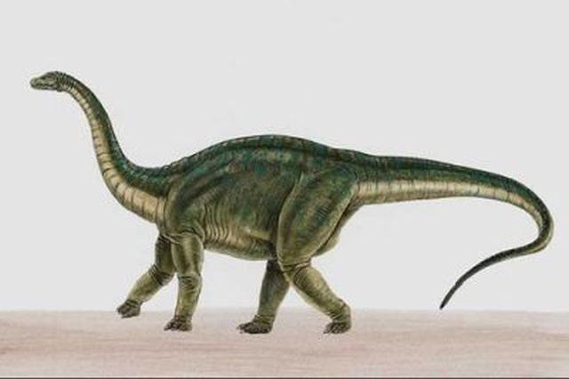

Apatosaurus
is also known as Brontosaurus, this giant dinosaur is one of the largest animals to have walked on Earth.
- The Apatosaurus is also well known as the Brontosaurus. Confusion was caused when bones of the giant dinosaur were first discovered back in 1877 by Othniel Charles Marsh. After naming the new dinosaur Apatosaurus (meaning
deceptive lizard
), he later found a larger set of bones and incorrectly thought they were a new species which he then named Brontosaurus (meaningthunder lizard
). It turns out that the second set of bones were just the adult version of the Apatosaurus. The name Brontosaurus caught on and it wasn’t until recently that the original and technically correct name Apatosaurus has gained widespread use among the public - Apatosaurus lived in the Jurassic Period, around 150 million years ago
- The Apatosaurus is one of the largest animals to have ever walked on Earth, averaging around 23m (75ft) in length and a weight of over 23 metric tons
- Apatosaurus had long whip-like tails that counter balanced their long necks
- Apatosaurus was a plant eating (herbivore) dinosaur

Apatosaurus